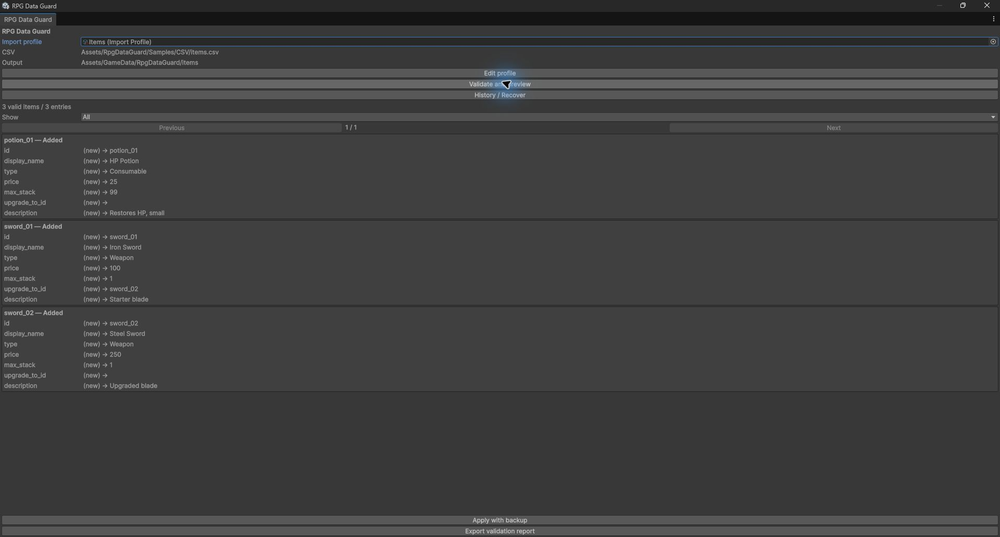

THE TOOLBOX / RPG DATA GUARD
Check the data.
Review the change.
Fixed-format item CSV validation and ScriptableObject imports for the Unity Editor.
Release candidate · In preparation

What it does
- Validate seven-column item CSVs. Check IDs, types, numeric values and upgrade references before applying changes.
- See the difference. Inspect Added, Modified, Unchanged, Missing and Conflict entries, including field differences.
- Preserve existing references. Apply imports while preserving managed asset GUIDs and local file IDs. Missing CSV rows retain their assets; the generated catalog includes current rows only.
- Back up each transaction. Use interrupted-import detection and guarded recovery tools. Recovery stops when unexpected edits need investigation.
- Use the imported data at runtime. Import in the Editor; the runtime assembly has no UnityEditor dependency.
Verified environment
Other Unity versions, macOS, Linux, URP and HDRP have not been verified.
Know the scope
The current workflow uses one fixed item schema. It does not support XLSX, Google Sheets, arbitrary class mapping, runtime imports, automatic synchronization, multi-table relationships or automatic ID migration.
Custom fields, sub-assets and custom serialization are not supported. One Editor process must own the project; concurrent external edits during import are unsupported.
Some large-import performance targets remain unmet. No instant-import, complete data-loss prevention or broad compatibility claim is made.
Release status
The candidate package has been uploaded. Store submission, approval and public release are pending. There is no purchase link until public availability has been confirmed.
AI assistance was used for code, tests, samples and documentation. Independent human code review and customer validation have not been confirmed.
Read the candidate notes →